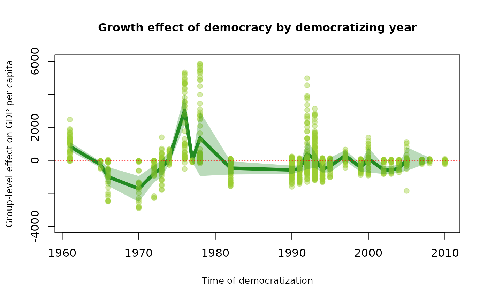

Introduction and setup
This article applies the did and
didwrappers package to a dataset that considers the impact
of democratization on per capita GDP growth. The data for the study is a
subset used by the following paper:
Acemoglu, D., Naidu, S., Restrepo, P., & Robinson, J. A. (2019). Democracy does cause growth. Journal of political economy, 127(1), 47-100.
The data is only a sample and is not an attempt at replicating the original paper. The results are purely to demonstrate the functions of the package.
In a balanced panel, estimates between did and
didwrappers should be the same, although the standard
errors differ. But with unbalanced panels, the estimates can also
differ. This example considers some reasons why, and provides some
guidance on which package might be appropriate to the purposes.
# load packages and data
library(did)
library(didwrappers)
demgdp = didwrappers::demgdpSome pre-processing needs to be done to be suitable for estimation. First, the year of democratization is missing for non-democracies. Replace this with a zero or a year later than the last year of observation, which is 2010.
demgdp[is.na(demgdp$YearFirstDemocracy),"YearFirstDemocracy"] <- 0The estimator assumes a once-treated-always-treated type of treatment. This is not true of democratization because there can be democracy reversals and breakdowns. There are several way of accommodating reversals in a once-treated-always-treated setup. One would be to remove the country-year records after the first breakdown. Another would be to remove country-year records that correspond to a breakdown. An even more different approach would be to change the identity codes to rename the country each time democracy breaks down. The approach depends on the type of dynamic effect that might interest the analyst. I adopt the second approach, removing any reversals.
demgdp <- demgdp[demgdp$breakdown==0,]The country code (wbcode) should be numeric.
demgdp$wbnum <- as.numeric(as.factor(demgdp$wbcode))We must also make the decision about what would be the control group. The default is those that were never democratized. For demonstration purposes, I change this to the not yet treated group.
The estimates from the did package
I now produce the estimates from the did package. Before
running the estimator, it would be informative to consider the groups in
the data. A group is determined by the treatment time, or in this case
year of democratization.
table(unique(demgdp[,c("wbcode","YearFirstDemocracy")])[,"YearFirstDemocracy"])
#> YearFirstDemocracy
#> 0 1960 1961 1962 1965 1966 1970 1972 1973 1974 1975 1976 1977 1978 1979 1980
#> 42 33 2 1 1 5 5 2 2 1 3 2 3 4 2 3
#> 1981 1982 1983 1990 1991 1992 1993 1994 1995 1997 1999 2000 2002 2003 2004 2005
#> 2 4 1 7 9 6 11 8 2 1 2 3 1 1 1 2
#> 2007 2008 2010
#> 1 1 1This shows that there are 35 groups in the data, including the group
of 42 countries that are never democracies in the period 1960-2010. The
group of countries whose YearFirstDemocracy is 1960 will be
dropped from the analysis since they enter the analysis as democracies
already. I would expect results from no more than 33 groups. They would
have different lengths of dynamic effects. For example, the
group/country that democratizes in 2010 will only produce the
instantaneous effect.
To produce the unconditional differences-in-differences estimates
with the did package:
out <- did::att_gt(yname = "gdppercapitaconstant2000us",
gname = "YearFirstDemocracy",
idname = "wbnum",
tname = "year",
xformla = ~1,
data = demgdp,
panel = FALSE,
control_group = "notyettreated",
est_method = "reg"
)Messages and warnings were turned off for aesthetic purposes. However, the unbalanced nature of the panel will produce many messages. The warnings will related to small groups, which is unavoidable because of the sparsity of democratizations that occur.
There are a large number of differences-in-difference estimates produce by the previous operation. Because this is overwhelming it is useful to aggregate this information. I aggregate the effects into the group level here, but many other aggregations are possible. Refer to other functions in the did package.
group_effects <- did::aggte(out, type = "group", na.rm = TRUE)Arrange these effects into a table
group_effects_df <- didwrappers::aggite_table(group_effects)I plot these group effects. The dark green line are group effect. The lighter green band around them is the uniform confidence interval, and the green dots are the individual differences-in-differences effects that were aggregated to produce the group-level estimates.
plot(group_effects$egt, group_effects$att.egt, col="forestgreen", lwd=5,
type = "l",
ylim = c(-6000,12000),
ylab = "Group-level effect on GDP per capita",
xlab = "Time of democratization",
main = "Growth effect of democracy by democratizing year",
cex.main = 1,
cex.lab = 0.82)
points(out$group, out$att, pch=19, col=adjustcolor("olivedrab3",0.4))
polygon(x=c(group_effects_df$egt, rev(group_effects_df$egt)),
y=c(group_effects_df$lowci, rev(group_effects_df$highci)),
col=adjustcolor( "forestgreen", alpha.f = 0.3), border = FALSE)
abline(h=0,lty=3,col="red")The overall effect and its significance can also be obtained.
# Overall effect
group_effects$overall.att
#> [1] 756.8741The 95% confidence interval
# Confidence interval
paste("[",group_effects$overall.att-1.96*group_effects$overall.se,",", group_effects$overall.att+1.96*group_effects$overall.se,"]")
#> [1] "[ 240.54681719526 , 1273.20141833828 ]"Overall democratization has a positive effect of GDP growth. But there seems to be a great amount of heterogeneity. Some effects are negative, but rarely significantly.
The estimates from the didwrappers package
The didwrappers package maintains the syntax of the
did package. Its algorithm is slightly different. Instead
of calculating the individual differences-in-differences estimates at
the group level, it calculates those estimates at the unit level. In
this case, at the country level.
It also restricts the comparisons to be observed pre- and post- treatment, so that units that were observed only pre-treatment or only post-treatment are removed.
out_it <- didwrappers::att_it(yname = "gdppercapitaconstant2000us",
gname = "YearFirstDemocracy",
idname = "wbnum",
tname = "year",
xformla = ~1,
data = demgdp,
panel = FALSE,
control_group = "notyettreated",
est_method = "reg"
)Group effects are found by aggregating the individual estimates to the group level.
group_effects_it <- didwrappers::aggite(out_it, type = "group", na.rm = TRUE)
group_effects_it_df <- didwrappers::aggite_table(group_effects_it)Plotting the group effects:
plot(group_effects_it$egt, group_effects_it$att.egt, col="forestgreen", lwd=5,
type = "l",
ylim = c(-4000,5000),
ylab = "Group-level effect on GDP per capita",
xlab = "Time of democratization",
main = "Growth effect of democracy by democratizing year",
cex.main = 1,
cex.lab = 0.82)
points(out_it$group, out_it$att, pch=19, col=adjustcolor("olivedrab3",0.4))
polygon(x=c(group_effects_it_df$egt, rev(group_effects_it_df$egt)),
y=c(group_effects_it_df$lowci, rev(group_effects_it_df$highci)),
col=adjustcolor( "forestgreen", alpha.f = 0.3), border = FALSE)
abline(h=0,lty=3,col="red")
There group level effects are quite different to the previous
estimates of the did package. There are some large negative
effects in addition to postive effects.
The overall effects is insignificant.
# overall effect
group_effects_it$overall.att
#> [1] -202.018The 95% confidence interval
# Confidence interval
paste("[",group_effects_it$overall.att-1.96*group_effects_it$overall.se,",", group_effects_it$overall.att+1.96*group_effects_it$overall.se,"]")
#> [1] "[ -768.777967071686 , 364.741956033862 ]"Comparison
What caused these differences?
Comparison of the group effects show that they produced quite different effects. One of the biggest differences were for the 1970 group. We could look at this group in the years 1969 and 1970. First we look at the treatment group in 1970. There are 5 countries in the treatment group.
demgdp[demgdp$YearFirstDemocracy==1970 & demgdp$year %in% c(1969,1970),c(1:5,8)]
#> # A tibble: 6 × 6
#> country_name wbcode year gdppercapitaconstant2000us dem wbnum
#> <chr> <chr> <dbl> <dbl> <dbl> <dbl>
#> 1 Germany DEU 1970 11895. 1 41
#> 2 Fiji FJI 1970 1382. 1 54
#> 3 Ghana GHA 1969 274. 0 59
#> 4 Ghana GHA 1970 294. 1 59
#> 5 Ireland IRL 1970 7335. 1 74
#> 6 Malta MLT 1970 1968. 1 108There are 5 countries that enter the analysis in 1970. However, only Ghana is observed pre-democracy. Now consider the countries that might be in the control group.
demgdp[(demgdp$YearFirstDemocracy==0|demgdp$YearFirstDemocracy>1970) & demgdp$year %in% c(1969,1970),c(1:5,8)]
#> # A tibble: 106 × 6
#> country_name wbcode year gdppercapitaconstant2000us dem wbnum
#> <chr> <chr> <dbl> <dbl> <dbl> <dbl>
#> 1 Argentina ARG 1969 6515. 0 3
#> 2 Argentina ARG 1970 6611. 0 3
#> 3 Burundi BDI 1969 106. 0 9
#> 4 Burundi BDI 1970 127. 0 9
#> 5 Benin BEN 1969 292. 0 11
#> 6 Benin BEN 1970 292. 0 11
#> 7 Burkina Faso BFA 1969 139. 0 12
#> 8 Burkina Faso BFA 1970 137. 0 12
#> 9 Bolivia BOL 1969 954. 0 20
#> 10 Bolivia BOL 1970 927. 0 20
#> # ℹ 96 more rowsSwaziland and Cuba are observed only in 1970. Otherwise, all other countries in the control group in 1970 are observed across both years.
Here are the estimates, and counts from the didwrappers
package for the 1969-1970 and the 1969-1971 differences-in-differences
estimate.
attit_table(out_it)[out_it$group==1970 & out_it$t %in% c(1970,1971),c("id","group","t","att","count")]
#> id group t att count
#> 1210 41 1970 1970 NA 0
#> 1211 41 1970 1971 NA 0
#> 1560 54 1970 1970 NA 0
#> 1561 54 1970 1971 NA 0
#> 1660 59 1970 1970 -53.40957 53
#> 1661 59 1970 1971 -111.43377 53
#> 2260 74 1970 1970 NA 0
#> 2261 74 1970 1971 NA 0
#> 3160 108 1970 1970 NA 0
#> 3161 108 1970 1971 NA 0The did package doesn’t produce the counts, but the
corresponding estimates for the 1969-1970, and 1969-1971
differences-in-differences estimates are
dfit = data.frame(group=out$group,t=out$t,att=out$att)
dfit[dfit$group==1970 & dfit$t %in% c(1970,1971),]
#> group t att
#> 210 1970 1970 4236.862
#> 211 1970 1971 4297.849The 1969-1970 difference-in-difference estimates suffer from a severe
case of imbalance. The did algorithm uses all 5 countries
in the 1970 group. But the didwrappers estimates only use
Ghana in the group because it is the only country that is observed both
in 1960 and 1970. The instantaneous effect for the did
estimate is calculated by differencing against only the 1969 value in
Ghana, resulting in a large positive effect for this group as richer
countries such as Germany and Ireland suddenly appear in 1970 without
being seen in 1969.
Which type of estimator is more appropriate depends on the
‘balancedness’ in the data. With unbalanced data, the did
algorithm implements a repeated cross-section type of analysis. There,
the composition of the treatment group pre- and post-treatment does not
have to be equal. This is appropriate in individual-level records
because heterogeneity across individuals are likely to be minimal. In an
application with countries, such an assumption may be too strong. Ghana
and Germany are quite different to each other. In the case of Germany
(refers to West Germany), its entry into the sample is not the same as
democratization. A more serious analysis of democratization would need
to check each of the dates in YearFirstDemocracy. This
consideration matters for the control group as well. In this particular
case, only two countries suddenly appear in 1970, so the effect of
imbalance is small.
Ensuring the composition of units pre- and post-treatment is equal results in sample losses. In this case, Germany, Fiji, Ireland, and Malta will all be lost due to lack of pre-treatment information. This is an important trade-off to consider.